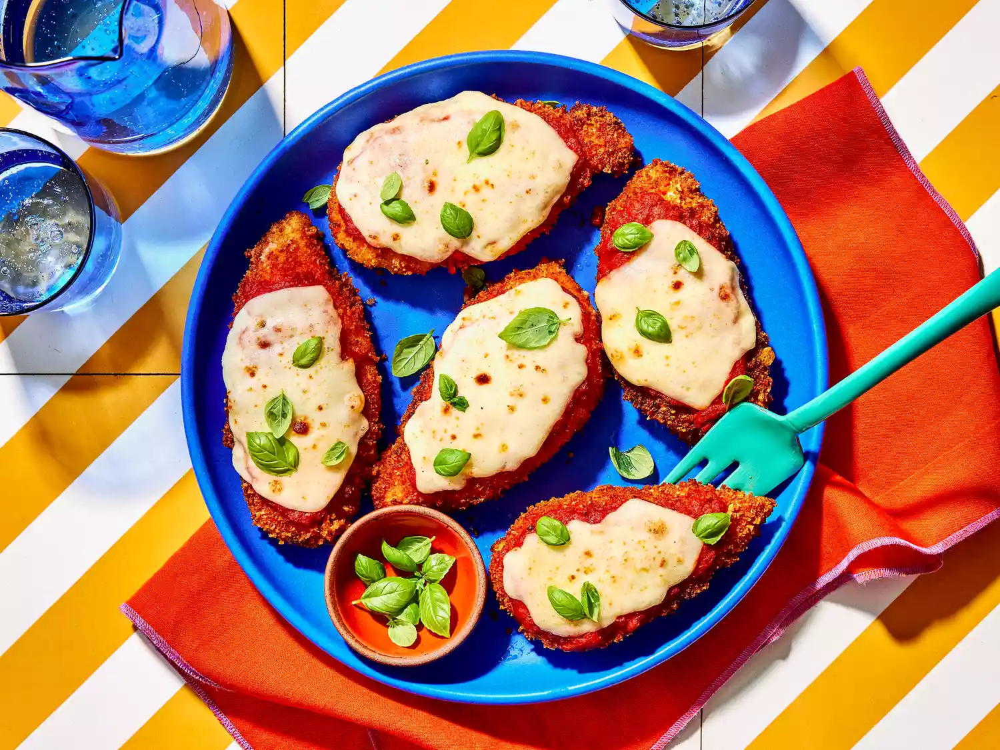

Easy Chicken Parmesan
Home

Description
This Easy Chicken Parmesan recipe results in a delicious, satisfying meal
that the whole family will love. Crispy breaded chicken is smothered in
marinara sauce and topped with melted mozzarella and Parmesan cheese.
Ingredients
This recipe uses simple, easy-to-find ingredients to create a
restaurant-quality dish right in your own kitchen.
-
Chicken: Boneless, skinless chicken breasts, pounded to
an even thickness.
-
Breading: A mixture of seasoned breadcrumbs and grated
Parmesan cheese creates a flavorful, crispy crust.
- Eggs: To help the breading stick to the chicken.
-
Marinara Sauce: Use your favorite store-bought or
homemade sauce.
-
Cheeses: Shredded mozzarella and grated Parmesan cheese
for that perfect cheesy topping.
- Oil: For frying the chicken to a golden brown.
How to Make Chicken Parmesan Step-By-Step
Follow these simple steps for a perfect chicken parm every time.
- Prepare the chicken by pounding it to an even thickness.
-
Set up a breading station with flour, beaten eggs, and the
breadcrumb-parmesan mixture.
-
Dredge each chicken breast in flour, dip in egg, and coat thoroughly
with the breadcrumb mixture.
-
Pan-fry the breaded chicken in oil until golden brown and cooked
through.
-
Place the cooked chicken in a baking dish, top with marinara sauce,
mozzarella, and Parmesan cheese.
-
Bake at 400°F (200°C) until the sauce is bubbly and the cheese is melted
and golden.